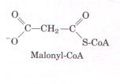
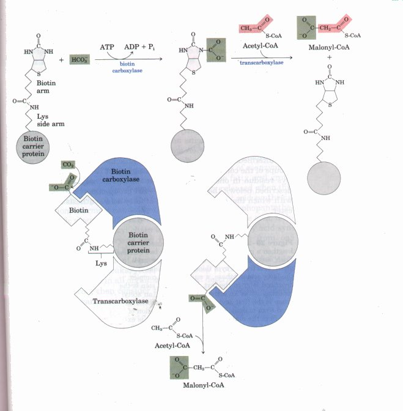
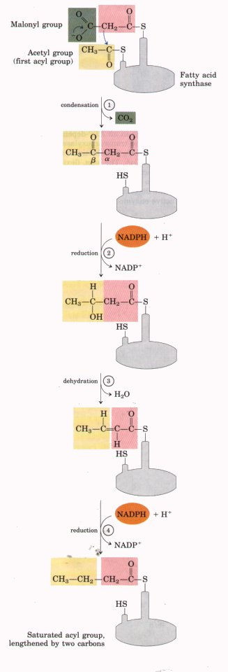
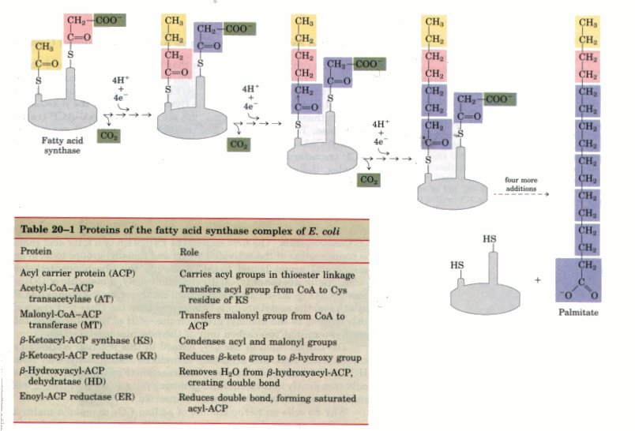
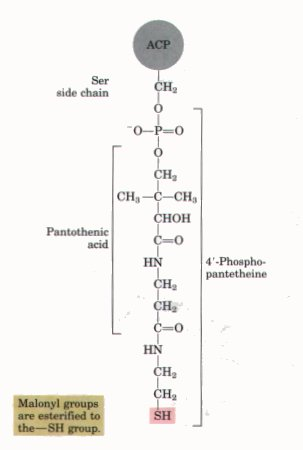
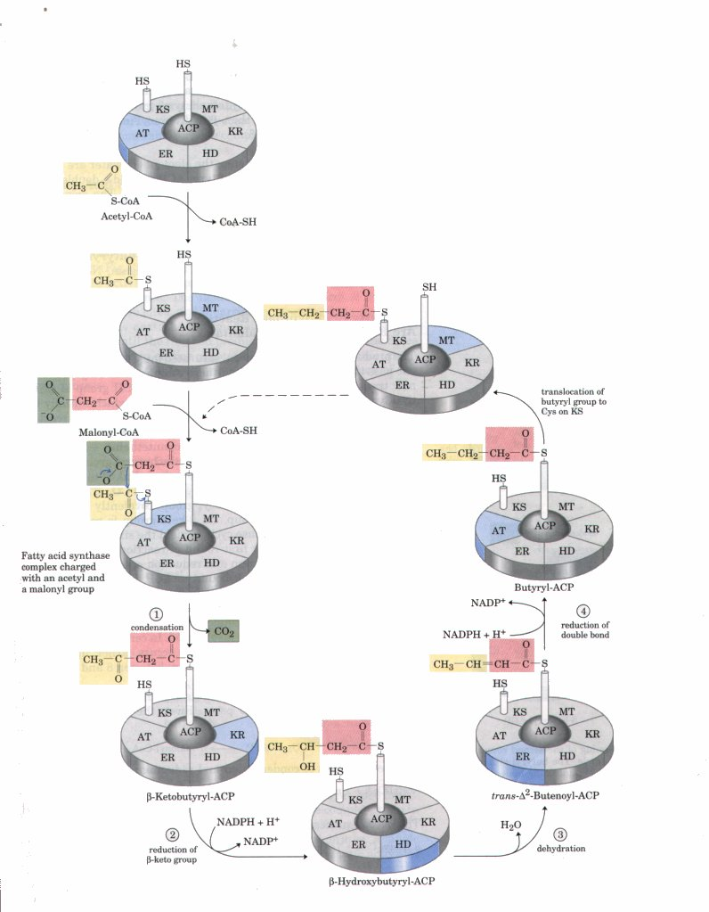

Lipids play a variety of cellular roles, including some only recently recognized. They are the principal form of stored energy in most organisms, as well as major constituents of cell membranes. Specialized lipids serve as pigments (retinal), cofactors (vitamin K), detergents (bile salts), transporters (dolichols), hormones (vitamin D derivatives, sex hormones), extracellular and intracellular messengers (eicosanoids and derivatives of phosphatidylinositol), and anchors for membrane proteins (covalently attached fatty acids, prenyl groups, and phosphatidylinositol). The ability to synthesize a variety of lipids is therefore essential to all organisms. This chapter describes biosynthetic pathways for some of the principal lipids present in most cells, illustrating the strategies employed in assembling these water-insoluble products from simple, water-soluble precursors such as acetate. Like other biosynthetic pathways, these reaction sequences are endergonic and reductive. They use ATP as a source of metabolic energy and a reduced electron carrier (usually NADPH) as a reductant.
We first describe the biosynthesis of fatty acids, the major components of both triacylglycerols and phospholipids. Then we examine the assembly of fatty acids into triacylglycerols and into the simpler types of membrane phospholipids. Finally, we consider the synthesis of cholesterol, a component of some membranes and the precursor of such steroid products as the bile acids, sex hormones, and adrenal cortical hormones.

When fatty acid oxidation was found to occur by oxidative removal of successive two-carbon (acetyl-CoA) units (see Fig. 16-8), biochemists thought that the biosynthesis of fatty acids might proceed by simple reversal of the same enzymatic steps used in their oxidation. However, fatty acid biosynthesis and breakdown occur by different pathways, are catalyzed by different sets of enzymes, and take place in different parts of the cell. Moreover, a three-carbon intermediate, malonylCoA, participates in the biosynthesis of fatty acids but not in their breakdown.We focus first on the pathway of fatty acid synthesis, then turn our attention to regulation of the pathway and to the biosynthesis of longchain fatty acids, unsaturated fatty acids, and their eicosanoid derivatives .
The irreversible formation of malonyl-CoA from acetyl-CoA is catalyzed by acetyl-CoA carboxylase (Fig. 20-1). Acetyl-CoA carboxylase contains biotin as its prosthetic group, covalently bound in amide linkage to the ε-amino group of a Lys residue on one of the three subunits of the enzyme molecule. The two-step reaction is very similar to other biotin-dependent carboxylation reactions, such as those catalyzed by pyruvate carboxylase (see Fig. 15-13) and propionyl-CoA carboxylase (see Fig. 16-12). The carboxyl group, derived from bicarbonate (HCO3 ), is first transferred to biotin in an ATP-dependent reaction. The biotinyl group serves as a temporary carrier of C02, transferring it to acetyl-CoA in the second step to yield malonyl-CoA.
Acetyl-CoA carboxylase from bacteria has three separate polypeptide subunits, as shown in Figure 20-1. In higher plants and animals, all three activities are part of a single multifunctional polypeptide.

Figure 20-1 The acetyl-CoA carboxylase reaction. Acetyl-CoA carboxylase has three functional regions: biotin carrier protein (gray); biotin carboxylase, which activates C02 by attaching it to a nitrogen in the biotin ring in an ATP-dependent reaction (see Fig. 15-13b); and transcarboxylase, which transfers activated COz from biotin to acetyl-CoA, producing malonyl-CoA. The long, flexible biotin arm carries the activated CO2 from the biotin carboxylase region to the transcarboxylase active site, as shown in the diagrams below the reaction arrows. The active enzyme in each case is shaded in blue.
The Biosynthesis of Fatty Acids Proceeds by a Distinctive PathwayThe fundamental reaction sequence by which the long chains of carbon atoms in fatty acids are assembled consists of four steps (Fig. 20-2). The saturated acyl group produced during this set of reactions is recycled to become the substrate in another condensation with an activated malonyl group. With each passage through the cycle, the fatty acyl chain is extended by two carbons. When the chain length reaches 16, the product (palmitate, 16:0; see Table 9-1) leaves the cycle. The methyl and carboxyl carbon atoms of the acetyl group become C-16 and C-15, respectively, of the palmitate (Fig. 20-3); the rest of the carbon atoms are derived from malonyl-CoA. Both the electron carrier cofactor and the activating groups in the reductive anabolic sequence are different from those that act in the oxidative catabolic process. Recall that in β oxidation, NAD+ and FAD serve as electron acceptors, and the activating group is the thiol (-SH) group of coenzyme A (see Fig. 16-8). By contrast, the reducing agent in the synthetic sequence is NADPH, and the activating groups are two different enzyme-bound -SH groups, to be described below. All of the reactions in the synthetic process are catalyzed by a multienzyme complex, the fatty acid synthase. The detailed structure of this multienzyme complex and its location in the cell differ from one species to another, but the reaction sequence is identical in all organisms. The Fatty Acid Synthase Complex Has Seven Different Active SitesThe fatty acid synthase system from E. coli consists of seven separate polypeptides that are tightly associated in a single, organized complex (Table 20-1). The proteins act together to catalyze the formation of fatty acids from acetyl-CoA and malonyl-CoA. Throughout the process, the intermediates remain covalently attached to one of two thiol groups of the complex. One point of attachment is the -SH group of a Cys residue in one of the seven proteins (β-ketoacyl-ACP synthase, described below); the other is the -SH group of acyl carrier protein, with which the acyl intermediates of fatty acid synthesis form a thioester. |
 Figure 20-2 The four-step sequence used to lengthen a growing fatty acyl chain by two carbons. Each malonyl group and acetyl (or longer acyl) group is activated by a thioester that links it to the fatty acid synthase, a multienzyme complex described later in the text. 1. The first step is the condensation of an activated acyl group (an acetyl group is the first acyl group) and two carbons derived from malonyl-CoA, with the elimination of CO2 from the malonyl group; the net effect is extension of the acyl chain by two carbons. The β-keto product of this condensation is then reduced in three more steps nearly identical to the reactions of β- oxidation, but in the reverse sequence: 2 the β-keto group is reduced to an alcohol, 3. the elimination of H2O creates a double bond, and 4.the double bond is reduced to form the corresponding saturated fatty acyl group. |

| Acyl carrier protein
(ACP) of E. coli (Table 20-1) is a small protein (M,.
8,860) containing the prosthetic group 4'-phosphopantetheine
(Fig. 20-4), an intermediate in the synthesis of coenzyme
A (see Fig. 12-41). The thioester that links ACP to the
fatty acyl group has a high free energy of hydrolysis,
and the energy released when this bond is broken helps to
make the first reaction in fatty acid synthesis,
condensation, thermodynamically favorable. The
4'-phosphopantetheine prosthetic group of ACP is believed
to serve as a flexible arm, tethering the growing fatty
acyl chain to the surface of the fatty acid synthase
complex and carrying the reaction intermediates from one
enzyme active site to the next. Although the details of enzyme structure differ in prokaryotes such as E. coli and in eukaryotes, the four-step process of fatty acid synthesis is the same in all organisms. We first describe the process as it occurs in E. coli, then consider the differences in enzyme structure among other organisms. |
 Figure 20-4 Acyl carrier protein (ACP). The prosthetic group is 4'-phosphopantetheine, which is covalently attached to the hydroxyl group of a Ser residue in ACP. Phosphopantetheine contains the B vitamin pantothenate, also found in the coenzyme A molecule. Its -SH group is the site of entry of malonyl groups during fatty acid synthesis. |
reactions that build up the fatty acid chain can begin, the two thiol groups on the enzyme complex must be charged with the correct acyl groups (Fig. 20-5). First, the acetyl group of acetyl-CoA is transferred to the Cys -SH group of the β-ketoacylACP synthase. This reaction is catalyzed by acetyl-CoA-ACP transacetylase. The second reaction, transfer of the malonyl group from malonyl-CoA to the -SH group of ACP, is catalyzed by malonyl-CoA-ACP transferase, also part of the complex. In the charged synthase complex, the acetyl and malonyl groups are very close to each other and are activated for the chain-lengthening process, which consists of the four steps outlined earlier. These steps are now considered in some detail.
1. Condensation The first step in the formation of a fatty acid chain is condensation of the activated acetyl and malonyl groups to form an acetoacetyl group bound to ACP through the phosphopantetheine -SH group: acetoacetyl-ACP; simultaneously, a molecule of COZ is produced (Fig. 20-5). In this reaction, catalyzed by β-ketoacyl-ACP synthase, the acetyl group is transferred from the Cys -SH group of this enzyme to the malonyl group on the -SH of ACP, becoming the methyl-terminal two-carbon unit of the new acetoacetyl group.
The carbon atom in the CO2 formed in this reaction is the same carbon atom that was originally introduced into malonyl-CoA from HCO3 by the acetyl-CoA carboxylase reaction (Fig. 20-1). Thus CO2 is only transiently in covalent linkage during fatty acid biosynthesis; it is removed as each two-carbon unit is inserted.
Why do cells go to the trouble of adding CO2 to make a malonyl group from an acetyl group, only to lose CO2 again during the formation of acetoacetate? Remember that in the β oxidation of fatty acids, cleavage of the bond between two acyl groups (the cleavage of an acetyl unit from the acyl chain) is highly exergonic. Therefore, the simple condensation of two acyl groups (of two acetyl-CoA molecules, for example) is endergonic. The condensation reaction is made thermodynamically favorable by the involvement of activated malonyl, rather than acetyl, groups. The methylene carbon (C-2) of the malonyl group, sandwiched between carbonyl and carboxyl carbons, is an especially good nucleophile. In the condensation step (Fig. 20-5), decarboxylation of the malonyl group facilitates the nucleophilic attack of this methylene carbon on the thioester linking the acetyl group to β-ketoacyl-ACP synthase, displacing the enzyme's -SH group. Coupling the condensation to the decarboxylation of the malonyl group renders the overall process highly exergonic. Recall that a similar carboxylationdecarboxylation sequence facilitates the formation of phosphoenolpyruvate from pyruvate in gluconeogenesis (see Fig. 19-3).
By using activated malonyl groups in the synthesis of fatty acids and activated acetate in their degradation, the cell manages to make both processes favorable, although one is effectively the reversal of the other. The extra energy required to make fatty acid synthesis favorable is provided by the ATP used to synthesize malonyl-CoA from acetylCoA and HCO3-- (Fig. 20-1).
2. Reduction of the Carbonyl Group The acetoacetyl-ACP formed in the condensation step next undergoes reduction of the carbonyl group at C-3 to form D-β-hydroxybutyryl-ACP (Fig. 20-5). This reaction is catalyzed by /3-ketoacyl-ACP/ reductase, and the electron donor is NADPH. Notice that the D-β-hydroxybutyryl group does not have the same stereoisomeric form as the L-β-hydroxyacyl intermediate in fatty acid oxidation (see Fig. 16-8).

Figure 20-5 The sequence of events that occurs during synthesis of a fatty acid. The fatty acid synthase complex is shown schematically. Each segment of the disc represents one of the six enzymatic activities of the complex: acetyl-CoA-ACP transacetylase (AT); malonyl-CoA-ACP transferase (MT); β-keto-ACP synthase (KS), containing a critical Cys-SH residue; β-ketoacyl-ACP reductase (KR,); β-hydroxyacyl-ACP dehydratase (HD); and enoyl-ACP reductase (ER). At the center is acyl carrier proteins (ACP), with its phosphopantetheine arm (Pn) ending in another -SH. The enzyme shown in blue is the one that will act in the next step. As in Fig. 20-3, the initial acetyl group is shaded yellow; C-1 and C-2 of malonate are shaded red; and the carbon released as C02 is shaded green.
3. Dehydration In the third step, the elements of water are removed from C-2 and C-3 of D-β-hydroxybutyryl-ACP to yield a double bond in the product, trans-Δ2-butenoyl-ACP (Fig. 20-5). The enzyme that catalyzes this dehydration is /i-hydroxyacyl-ACP dehydratase.
4.Reduction of the Double Bond Finally, the double bond of trans-Δ2-butenoyl-ACP is reduced (saturated) to form butyryl-ACP by the action of enoyl-ACP reductase (Fig. 20-5); again, NADPH is the electron donor.